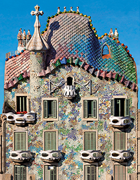
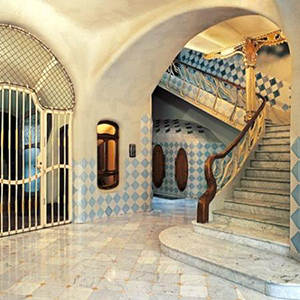
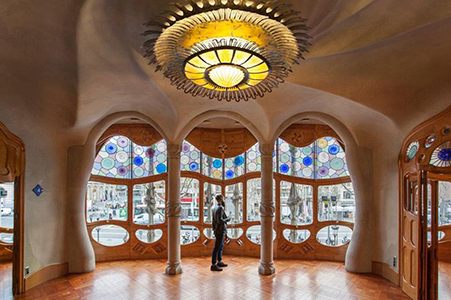

Imágenes
- 
-

- 
- 
Gaudí fue un arquitecto con un sentido innato de la geometría y el volumen, así como una gran capacidad imaginativa que le permitía proyectar mentalmente la mayoría de sus obras antes de pasarlas a planos. De hecho, pocas veces realizaba planos detallados de sus obras; prefería recrearlos sobre maquetas tridimensionales, moldeando todos los detalles según los iba ideando mentalmente. En otras ocasiones, iba improvisando sobre la marcha, dando instrucciones a sus colaboradores sobre lo que debían hacer.
La Casa Batlló es un reflejo de la plenitud artística de Gaudí: pertenece a su etapa naturalista (primera década del siglo XX), periodo en que el arquitecto perfecciona su estilo personal, inspirándose en las formas orgánicas de la naturaleza, para lo que puso en práctica toda una serie de nuevas soluciones estructurales originadas en los profundos análisis efectuados por Gaudí de la geometría reglada. A ello añade el artista catalán una gran libertad creativa y una imaginativa creación ornamental: partiendo de cierto barroquismo sus obras adquieren gran riqueza estructural, de formas y volúmenes desprovistos de rigidez racionalista o de cualquier premisa clásica.
El modernismo rechaza el estilo poco atractivo de la arquitectura industrial de la primera mitad del siglo XIX, y desarrolla nuevos conceptos arquitectónicos basados en la naturaleza, que consisten en los materiales de construcción que se emplean, en las formas de los edificios y en las figuras de sus fachadas. Los arquitectos y sus escultores colocan en el exterior de los edificios pájaros, mariposas, hojas y flores a modo de elementos decorativos, ya sea como figuras adosadas o como adorno de la piedra o cerámica. También se colocan figuras de tamaño mayor, animales fabulosos o personas, y en las cornisas elementos de cerámica de color. Las ventanas y los balcones disponen de rejas de hierro forjado, que son labradas artísticamente y contienen motivos inspirados en la naturaleza.